1004E10 ENGINE, removed - Remove cylinder head and oil sump for inspection - Includes positioning on stand and Removal
- Path
- Procedures > 10 ENGINE > 1004 ENGINE AND POWER UNIT > 1004E ENGINE ASSEMBLY INSPECTION AND REPAIRS > 1004E10 ENGINE, removed - Remove cylinder head and oil sump for inspection - Includes positioning on stand and Removal
- Kind
- repair procedure (removal / refitting; the operation number is the code)
- Applies to
- engines: 2.4 JTD 20V; all production periods
- Interactive page
- https://sloeber94.github.io/elrnDB-lThss/en/#/849831
Applies to: engines: 2.4 JTD 20V; all production periods
See in Op. 1004D40 ENGINE - Position on stand and Remove
- Position a suitable container for collecting the coolant.
1. Unscre the engine oil sump plug and drain the lubrication system.

Applies to: engines: 2.4 JTD 20V; all production periods
1. Disconnect the electrical connection for the timing sensor.
 | Description | Connector |
|---|---|---|
1 | Timing sensor | K047 |
2. Disconnect the electrical connections for the injectors.
| Description | Connector |
|---|---|---|
2 | Injector | N070A |
| Description | Connector |
|---|---|---|
2 | Injector | N070E |
| Description | Connector |
|---|---|---|
2 | Injector | N070D |
| Description | Connector |
|---|---|---|
2 | Injector | N070C |
| Description | Connector |
|---|---|---|
2 | Injector | N070B |
3. Disconnect the glow plug electrical connections.
| Description | Connector |
|---|---|---|
3 | Heater plugs | A040A |
| Description | Connector |
|---|---|---|
3 | Heater plugs | A040E |
| Description | Connector |
|---|---|---|
3 | Heater plugs | A040D |
| Description | Connector |
|---|---|---|
3 | Heater plugs | A040C |
| Description | Connector |
|---|---|---|
3 | Heater plugs | A040B |

Applies to: engines: 2.4 JTD 20V; all production periods
1. Disconnect the electrical connection for the turbo sensor.
| Description | Connector |
|---|---|---|
1 | Supercharging sensor | K082 |
2. Disconnect the electrical connection for the fuel pressure regulator.
| Description | Connector |
|---|---|---|
2 | Fuel pressure regulator | N077 |
3. Disconnect the electrical connection for the fuel pressure sensor.
| Description | Connector |
|---|---|---|
3 | Fuel pressure sensor | K083 |
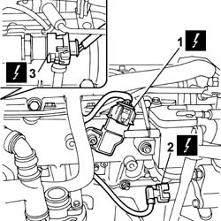
Applies to: engines: 2.4 JTD 20V; all production periods
1. Disonnect the electrical connection for the EGR solenoid valve.
| Description | Connector |
|---|---|---|
1 | EGR solenoid valve | L030 |
2. Disconnect the electrical connection for the engine rpm sensor.
| Description | Connector |
|---|---|---|
2 | Rpm sensor | K046 |
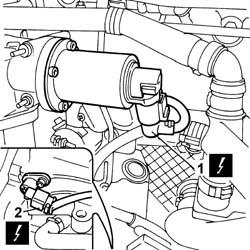
Applies to: engines: 2.4 JTD 20V; all production periods
1. Disconnect the electrical connection for the coolant temperature sensor.
| Description | Connector |
|---|---|---|
1 | Engine coolant temperature sensor/sender unit | K036 |

Applies to: engines: 2.4 JTD 20V; all production periods
1. Undo the retaining bolts (1a) and remove engine wiring (1b), releasing from any clips that are present.

Applies to: engines: 2.4 JTD 20V; all production periods
1. Fit the flywheel retaining tool in its seat on the engine block.
 | Description | Code | Function |
|---|---|---|---|
1 | Flywheel lock | 1.860.846.001 | Prevent the rotation of the crankshaft |
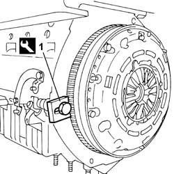
Applies to: engines: 2.4 JTD 20V; all production periods
1. Undo the fixing bolts (1a) and remove the crankshaft pulley (1b).
2. Undo the fixing bolt (2a) and remove the single drivebelt fixed tensioner (2b).

Applies to: engines: 2.4 JTD 20V; all production periods
1. Undo the fixing bolts (1a) and remove the protective timing covers (1b).
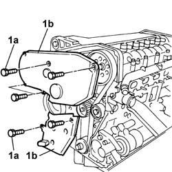
Applies to: engines: 2.4 JTD 20V; all production periods
1. Undo connectors (1a) and remove fuel pipes (1b) from the injectors to the single fuel pipe.
2. Undo connector (2a) of fuel pipe (2b) from pressure pump to single fuel pipe.
3. Undo the fixing bolts (3a) and remove the single fuel pipe (3b).
4. Undo the fixing bolts (4a) and remove the rigid pipe (4b).
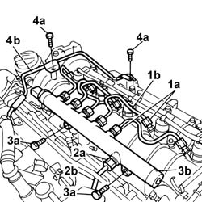
Applies to: engines: 2.4 JTD 20V; all production periods
1. Unscrew bolt (1a), open band (1b) and remove the rigid recirculation pipe (1c).
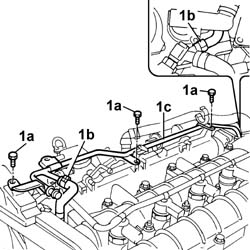
Applies to: engines: 2.4 JTD 20V; all production periods
1. Open the securing band (1a) and disconnect the oil vapour pipe (1b) from the cylinder head.
2. Open the securing band (2a) and disconnect the oil vapour pipe (2b) from the engine block.
3. Open the securing band (3a) and disconnect the oil vapour recovery pipe (3b) from the engine oil sump.
4. Undo bolts (4a) and remove the oil vapour recovery tank with pipes (4b).
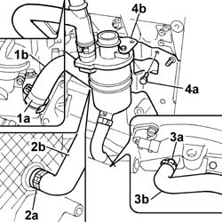
Applies to: engines: 2.4 JTD 20V; all production periods
1. Undo the fixing bolts (1a) and remove the engine oil dipstick pipe assembly (1b).

Applies to: engines: 2.4 JTD 20V; all production periods
1. Undo retaining clips (1a) and prise up the fuel recovery pipe from injectors (1b).
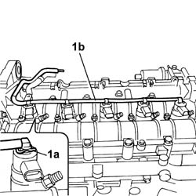
Applies to: engines: 2.4 JTD 20V; all production periods
1. Disconnect fuel pipe (1a), unscrew bolts (1b), then remove the fuel return manifold (1c).
2. Undo connector (2a) and remove the rigid fuel pipe (2b) from the pressure pump.
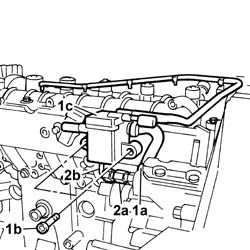
Applies to: engines: 2.4 JTD 20V; all production periods
1. Loosen the moving timing tensioner nut.
2. Remove the toothed timing belt.

Applies to: engines: 2.4 JTD 20V; all production periods
1. Lock the rotation of the pressure pump drive pulley using two bolts.
2. Undo the pressure pump drive pulley nut.
- Undo the two bolts for locking the rotation of the pressure pump drive pulley fitted previously.

Applies to: engines: 2.4 JTD 20V; all production periods
1. Use extractor (1a) to remove the pressure pump pulley (1b).
| Description | Code | Function |
|---|---|---|---|
1a | Extractor | 1.860.854.001 | Pressure pump control pulley removal |

Applies to: engines: 2.4 JTD 20V; all production periods
1. Undo the fixing nuts (1a) and remove the pressure pump (2b).

Applies to: engines: 2.4 JTD 20V; all production periods
1. Undo the fixing bolts (1a) and remove the power steering pump pulley (1b).
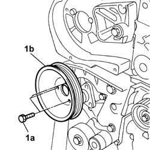
Applies to: engines: 2.4 JTD 20V; all production periods
1. Undo the bolts (1a) fixing the power steering pump (1a) to the support.

Applies to: engines: 2.4 JTD 20V; all production periods
1. Undo the fixing bolts (1a) and remove the pressure pump mounting (1b).
2. Remove the power assisted steering pump.

Applies to: engines: 2.4 JTD 20V; all production periods
1. Undo bolts (1a) securing rigid EGR pipe (1b).
- Recover the underlying metal sealing gasket.
2. Undo the fixing nuts (2a) and disconnect the intake manifold (2b).
- Recover the underlying metal sealing gasket.

Applies to: engines: 2.4 JTD 20V; all production periods
1. Open bands (1a) securing the coolant hoses to the heat exchanger (1b).
2. Undo the fixing bolts (2a) and remove the EGR heat exchanger (2b).
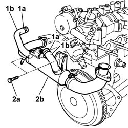
Applies to: engines: 2.4 JTD 20V; all production periods
1. Undo the bolts (1a) and remove the water pump delivery pipe (1b).
- Remove the metal gasket.

Applies to: engines: 2.4 JTD 20V; all production periods
1. Undo the bolts (1a) and remove the brackets (1b) and the injectors (1c).
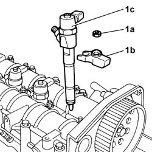
Applies to: engines: 2.4 JTD 20V; all production periods
1. Unscrew the glow plugs and remove.

Applies to: engines: 2.4 JTD 20V; all production periods
1. Undo retaining bolts (1a) and remove vacuum pump (1b).
2. Remove the metal gasket.
3. Undo the bolts (3a) and remove the engine oil filler fitting (3b).
4. Remove the metal gasket.
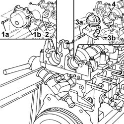
Applies to: engines: 2.4 JTD 20V; all production periods
1. Undo the fixing bolts (1a) and remove the single cylinder head extension (1b).
2. Remove the metal gasket.

Applies to: engines: 2.4 JTD 20V; all production periods
1. Undo the fixing bolts (1a) and remove the thermostat unit (1b).
- Remove the gasket.
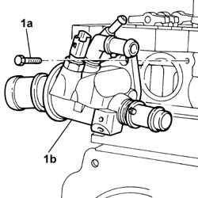
Applies to: engines: 2.4 JTD 20V; all production periods
1. Undo the fixing bolts (1a) and remove the coolant pump (1b).
- Remove the metal gasket.
2. Undo the fixing bolts (2a) and remove the side protective timing cover (1b).
3. Remove the valve rockers.
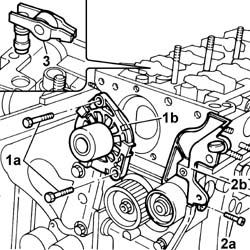
Applies to: engines: 2.4 JTD 20V; all production periods
1. Loosen the bolts fixing the cylinder head to the engine block
2. Remove the cylinder head.
- Remove the locating pins.
- Remove the metal gasket.

Applies to: engines: 2.4 JTD 20V; all production periods
- Rotate the engine through 180° on the overhaul stand.
1. Undo and remove the engine oil level sensor.
2. Undo the fixing bolts (2a) using tools (2b).
| Description | Code | Function |
|---|---|---|---|
2b | Undo the bolts securing the engine oil sump | 1.860.833.001 | Loosen/Tighten front and rear crankcase sump bolts |
| Description | Code | Function |
|---|---|---|---|
2b | Undo the bolts securing the engine oil sump | 1.860.834.001 | Loosen/Tighten crankcase sump side bolts |
3. Use tool (3a) to cut the sealant strip from the engine oil sump (3b) and then remove.
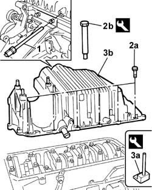
Applies to: engines: 2.4 JTD 20V; all production periods
1. Undo the fixing bolts (1a) and remove the engine oil intake duct (1b).
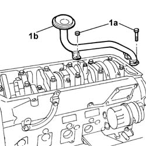
Applies to: engines: 2.4 JTD 20V; all production periods
1. Undo the bolt (1a) (left hand thread) and remove the toothed drive pulley (1b).
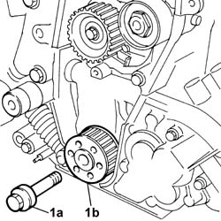
Applies to: engines: 2.4 JTD 20V; all production periods
1. Undo the fixing bolts (1a) and remove the clutch assembly (1b).
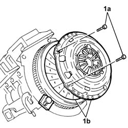
Applies to: engines: 2.4 JTD 20V; all production periods
1. Undo retaining bolts (1a) and remove flywheel (1b).

Applies to: engines: 2.4 JTD 20V; all production periods
1. Remove the flywheel lock.
| Description | Code | Function |
|---|---|---|---|
1 | Flywheel lock | 1.860.846.001 | Prevent the rotation of the crankshaft |
2. Undo the fixing bolts (2a) and remove the engine flywheel protection (2b).
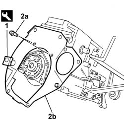